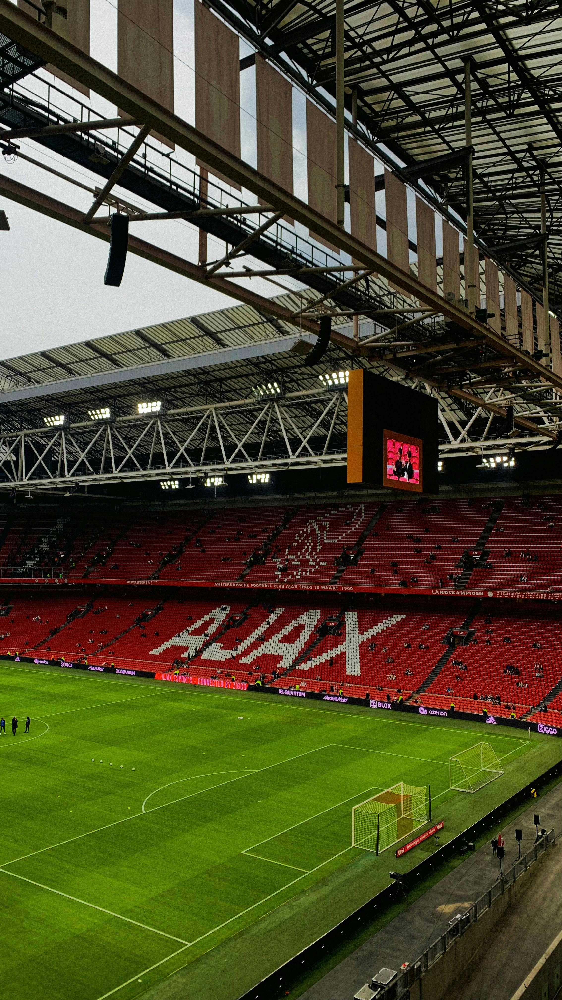

Curated Experiences We handpick weekends that blend football, culture, and local flavor — no generic packages here.
Fan-First Design Every layout, guide, and tip is built for fans — not travel agents. You’re in control of your weekend.
Editorial Depth From stadium lore to street rituals, we go beyond logistics to help you feel the pulse of matchday.
 Weekend in Amsterdam Total football, red-and-white legacy, and echoes of Cruyff. A weekend in Amsterdam means history, style, and a seat at the Johan Cruijff ArenA.
Napoli Weekend Vesuvian skies, roaring curva chants, and streets steeped in Maradona’s myth. A Napoli weekend is fire, faith, and football — all wrapped in sea breeze and espresso grit.
Liverpool Legends Tour Walk through the Shankly Gates and into football folklore. Anfield isn’t just a stadium — it’s a cathedral of memory, pride, and red devotion.